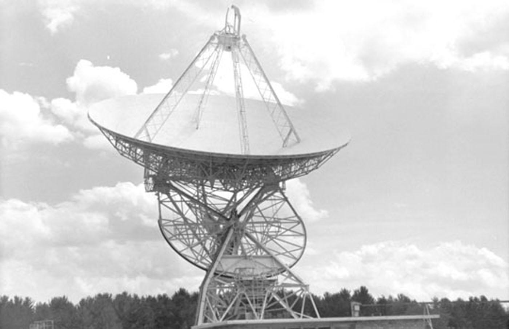

LCKA-DS-15-95
f95 type III civi.
Dyson sphere "hypothetical" megastructure
LkCa 15
100%
completed: 1912
PROJECT OZMA 1960 RADIO BREACH (Issue resolved,)
"With the exception of an "early false alarm" caused by "aircraft radar", the
only sound that came from the loudspeaker was static and no meaningful bumps
superimposed themselves on the formless wiggles on the recording paper."
